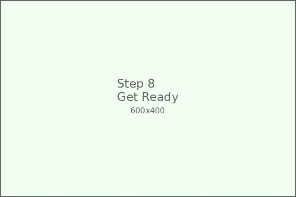
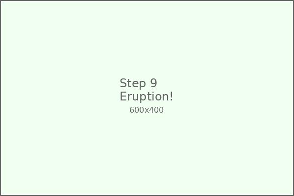
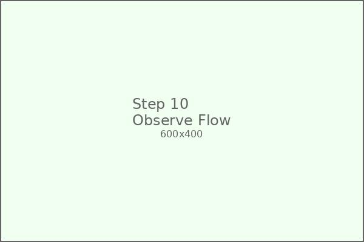
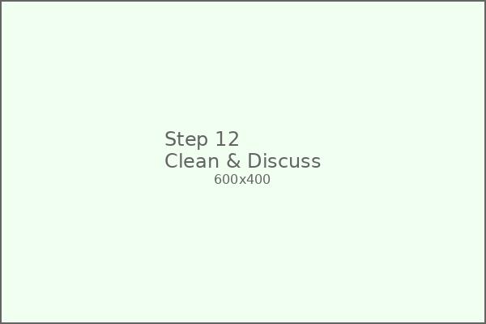

🌋 Baking Soda Volcano
Create an amazing erupting volcano using simple household ingredients! This classic science experiment teaches chemical reactions, geology, and provides hours of educational fun.
🛍️ Materials Needed
Baking Soda
3 tablespoons
White Vinegar
1/2 cup
Red Food Coloring
5-10 drops
Liquid Dish Soap
1 tablespoon
Modeling Clay
Brown or gray (1 container)
Plastic Bottle
16 oz water bottle
Funnel
For easy pouring
Newspaper
For covering work area
📋 Step-by-Step Instructions
Prepare Your Workspace

Cover your work area with newspaper or plastic sheeting. This experiment can get messy! Set up outdoors or in a well-ventilated area if possible.
Prepare the Bottle

Remove the label from your plastic bottle and rinse it clean. The bottle will be the "magma chamber" of your volcano.
Build the Volcano Base

Place the bottle in the center of your work area. Use modeling clay to build a volcano shape around the bottle, leaving the opening exposed.
Shape the Volcano

Continue building up the clay around the bottle to create a realistic volcano shape. Add texture and ridges to make it look more authentic.
Add Baking Soda

Using the funnel, carefully pour 3 tablespoons of baking soda into the bottle. Tap the sides gently to help it settle.
Prepare the Eruption Mixture

In a separate container, mix 1/2 cup of white vinegar, 5-10 drops of red food coloring, and 1 tablespoon of liquid dish soap.
Mix the Eruption Liquid

Stir the vinegar mixture well. The dish soap will help create more foam, and the red coloring makes it look like lava!
Get Ready for Eruption!
Have everyone stand back! Hold the vinegar mixture ready to pour. The reaction will start immediately when it touches the baking soda.
Pour and Watch It Erupt!
Quickly pour the vinegar mixture into the bottle and step back! Watch as your volcano erupts with foamy red "lava"!
Observe the Reaction
Watch how the foam flows down the sides of your volcano like real lava! The reaction will continue for several minutes.
Try Different Variations
Try different food coloring colors, add glitter for sparkle, or make multiple small volcanoes for a volcanic field!
Clean Up and Discuss
Clean up the area and discuss what happened. Talk about real volcanoes, chemical reactions, and what you observed during the experiment.
🎓 What Your Child Learns
Chemical Reactions
Understanding acid-base reactions and how different substances interact to create new products.
Geology
Learning about volcanoes, how they form, and the geological processes that create them.
Scientific Method
Making predictions, observing results, and drawing conclusions from experimental evidence.
Creative Expression
Building and decorating the volcano encourages artistic skills and imaginative play.
🔬 The Science Behind It
The Chemical Reaction
When baking soda (sodium bicarbonate) mixes with vinegar (acetic acid), they react to form carbon dioxide gas, water, and sodium acetate. The chemical equation is:
Why It Foams
The carbon dioxide gas creates bubbles, and the dish soap helps trap these bubbles to create more foam. This makes the eruption more dramatic and visible!
Real Volcanoes
Real volcanic eruptions are caused by pressure from molten rock (magma) beneath the Earth's surface. When pressure builds up, it forces the magma up through the volcano's opening.
🌈 Fun Variations to Try
Glitter Volcano
Add biodegradable glitter to your vinegar mixture for a sparkly eruption!
Volcano Field
Create multiple small volcanoes and make them erupt in sequence.
Underwater Volcano
Place your volcano in a large container of water to simulate underwater volcanic activity.
Ice Volcano
Add ice cubes to the vinegar mixture to see how temperature affects the reaction.
🛡️ Safety Guidelines
Adult Supervision
Adult supervision recommended for children under 8. Always have an adult present during the eruption.
Clothing Protection
Wear old clothes or aprons. The mixture can stain clothing and surfaces.
Work Area
Conduct experiment outdoors or in a well-ventilated area. Cover surrounding surfaces.
Clean Up
Clean up spills immediately. Wash hands thoroughly after handling materials.